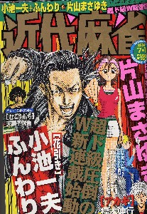
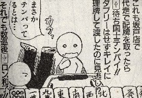

（130）配牌国士
|
役満といえば国士無双というくらい、国士無双はできやすい。そんな簡単なものがなぜ役満かと思うが、これでも昔はチョー難し
かった。それは元々の国士無双は配牌で十三門張になっているものを云った（雀頭ナシでアガリ）。いうなら十三不搭の完全型。
「そんなもん、出来るわけにゃあだよ」というので、雀頭が必要になった頃と期を同じくして、手作りも認められるようになった。
＃いまでも四槓子は、中国の本来のルールでは雀頭が不要（槓が４つ成立した段階でアガリ）。
手作りを認めると云っても、初期のうちは13門張によるアガリに限られていた。と云っても、中国麻雀にフリテンはない。
そこで仮りに 雀頭で 雀頭で マチをツモアガリしたとしても、 を１枚切ればよい。そして下家がを切ったら十三門張でロン。(^-^； マチをツモアガリしたとしても、 を１枚切ればよい。そして下家がを切ったら十三門張でロン。(^-^；
日本へ伝来したときも、最初は同じルール。しかし「いくら何でも、現物ロンは...」というので、13門張でも、現物は不可となった。
さらにそのうちに１つマチもＯＫとなった。そして現在では、１つマチでもＯＫであるが、13門張状態のときは「１枚でも切っていると
振りテン」というが主流のようだ。
なかには「国士に限り、暗槓でも搶槓（チャンカン）できる」とか、「国士に限り、フリテンなし」というルールもあるが、こんなに簡
単な役満を、どうしてさらに簡単にするのか、よく分からん(^-^； それはともかく、近代麻雀に「雀荘で遭った愉快な人々」という
４コマ連載がある。読者から寄せられた雀荘でのエピソードを４コマ漫画に仕立て、おもしろおかしく紹介する。そのH16.7.1号

その「愉快な人々」に、こんな漫画が...

国士のルールがどう変わろうと、配牌国士なんて出来るワケないと思っていたが、なんと日本で完成していた！。
ただし配牌国士であっても13門張ではない。ワハハハと笑って見過ごしていたが、よく考えてみたら歴史に残る大事件か！？。
|
と書いたら、下記のようなコメントを頂いた。
うめこ 投稿日：2004/09/04(Sat)
配牌国士（テンパイ）。勤めている店で２回見たことがあります。
どちらもダブリーをかけてあがりました。すごいなー
十三面ではありませんでした。
そのお客さん、若い男性の方で、ダブリーをかけた後、後で見ている友達とニヤニヤしているので「きっと麻雀をあまりしたことが無くて
ダブリーが珍しいんだろうなー」なんて思っていたら、通りすがりにみたところ国士テンパイ。
あーそりゃあうれしいだろうなー
見てしまったワタクシは顔色を変えないように必死で堪えるのが精一杯でした。
へえ〜、純正でなければ、配牌国士って結構あるんだ。(゜0゜)
となれば純正でなければ、「歴史に残る大事件！」というわけではないということか...
しかしまぁ、純正でなければよくある話(？)だとしても、配牌テンパイなら国士無双という名前にふさわしいアガリ(^-^)
＃配牌国士証明のためには、ダブリーが条件か。(笑)
|
孝 投稿日：2004/09/06(Mon)
はじめまして。
配牌国士の話ですが、僕も目撃しました。というより、振込ました(泣)
まず東家が を切りました。次に南家がダブリー。北家の僕は親と同じ を切りました。 を切りました。次に南家がダブリー。北家の僕は親と同じ を切りました。
すると南家がロン！ダブリー 一発 国士無双…
あれは、もう笑うしかなかったですね(笑
|
あさみ 投稿日：2004/09/06(Mon)
はじめまして、孝さん
なんと、それは災難。(-_-；
しかし東家ので当たらなかったとこを見ると、南家は第１ツモでテンパイ。つまり配牌国士イーシャンテンだったわけですね。
しかしダブリーなら、配牌国士と云って良い。
そんな災難にあいたくありませんが、幸せの方にはお目にかかりたい。(^-^)
|